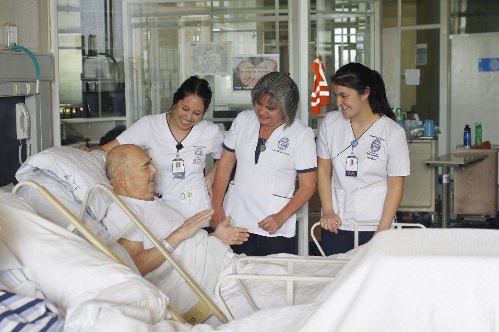

La Carrera
Formamos profesionales de enfermería con un marcado sello humanista, que centra el cuidado en la persona, familia y comunidad. La búsqueda de la excelencia caracteriza su quehacer, lo que se traduce en una gestión del cuidado integral, con un profundo sentido ético, marcada vocación de servicio, uso del pensamiento crítico y del trabajo colaborativo como eje central para alcanzar las metas.
Perfil de egreso
La Enfermera y el Enfermero de la Universidad de los Andes es un profesional de la salud que se centra en la gestión del cuidado, desde la concepción hasta la muerte natural, sustentado en una sólida base ética- jurídica, humanista y científica, marcado por un sentido profundo del valor del ser humano, especialmente en situaciones de vulnerabilidad, que podrá desempeñarse en todos los niveles de prevención y atención durante el proceso de salud – enfermedad.

Nuestros egresados están formados para buscar permanentemente la excelencia profesional, integrarse al equipo interdisciplinario y liderar la gestión del cuidado en las distintas áreas del rol profesional: asistencial, educación, gestión e investigación.
Dialoga con otras disciplinas, lo que le permite enriquecerse culturalmente y complementar su perfil profesional.
Áreas de desempeño:
El profesional de Enfermería de la Universidad de los Andes podrá desempeñar labores de enfermería asistenciales, de educación, gestión e investigación en diversos escenarios, tanto en el ámbito público como privado, que incluyen centros de salud de atención ambulatoria y hospitalaria, establecimientos educacionales, centros comunitarios, administración pública, proyectos en salud, fundaciones y grupos de investigación, entre otros.
Síntesis de los resultados de aprendizaje:
1. Gestiona los cuidados de enfermería, desde la concepción hasta la muerte natural, orientados a la promoción, prevención, recuperación y rehabilitación de la salud de la persona, familia y comunidad, en todos los niveles de atención, considerando los cambios demográficos.
2. Otorga, a través del Proceso Enfermero, un cuidado integral, humanizado, compasivo, espiritual, continuo y seguro, centrado en las necesidades de la persona y la familia, fundamentado en bases ético-jurídicas, científico-humanistas y en los conocimientos propios de la disciplina.
3. Lidera procesos educativos, para la promoción, prevención, mantención, recuperación y rehabilitación de la salud de la persona, familia y comunidad.
4. Resuelve problemas relacionados con la práctica profesional, utilizando el método científico, la práctica basada en la evidencia y la innovación para aportar al mejoramiento continuo de la gestión del cuidado y la salud de las personas.
5. Aplica principios de gestión y administración, en su desempeño profesional, promoviendo la flexibilidad, el trabajo colaborativo y el liderazgo en el equipo de enfermería.
6. Se comunica de forma efectiva, para establecer relaciones de confianza y respeto con la persona, familia, comunidad y equipo de salud.
7. Demuestra un actuar ético, orientado al servicio y al trabajo bien hecho, respetando la dignidad de la persona y su cultura, de acuerdo al ideario de la Profesión y de la Universidad de los Andes.
8. Reflexiona sobre su desempeño profesional, identificando los aspectos por mejorar en la gestión del cuidado.
9. Participa en proyectos sociales, centrados en las necesidades de la comunidad, que buscan mejorar la salud de la población.
10. Integra en su quehacer profesional conocimientos de otras áreas y disciplinas del saber.